Roger Federer: The Upward Swing
Comprehensive unified tennis knowledge base — Fundamentals, Stroke Analysis, Reference Library, and more
Roger Federer: The Upward Swing
John Yandell
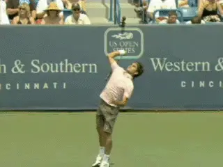
What can we learn about the upward swing from our new footage?
The racket path on upward swing on the serve is one of the most intensely debated technical issues among players and coaches. What can we learn about it when we study our incredible new high speed, high definition footage of Roger Federer?
The debates and misunderstandings about this part of the service motion are understandable for many reasons. First the entire upward swing occurs in a mere 1/10th of a second. In that split second interval, the racket head speed basically triples. (To see more about the duration of the phases of the serve in a quantitative study of Pete Sampras, Click Here.)
Second there is a very complex interplay of movements that creates that speed in that fraction of a second, movements that include the upper arm, the elbow, the forearm, the shoulder and the wrist. These body segments are all moving at the same time, and also changing shapes and positional relationships with each other.
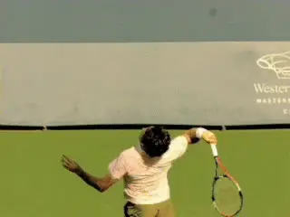
How can we understand the complex interplay of movement in a fraction of a second?
You can forget about seeing all that accurately with the naked eye. Even high speed video, as we will see, still leaves issues open to question and disagreement. So yeah, passionate, knowledgeable people come to different conclusions.
I've written about some of these debated issues before in articles on the movement of the wrist (Click Here), and on the motions of Federer (Click Here), Roddick (Click Here) and Sampras (Click Here). I've also gotten into many, shall we say, animated discussions, on internet message boards and at coaching conventions over what actually happens.
Then there is the related but not identical issue--how to make what actually happens happen. This is an equally puzzling and possibly even more debated question. And the one that really matters for players who want to improve their serves.
High Speed High Def
But now we have some incredible new data that allows us to see the upward swing more clearly than ever before. This high speed, high definition footage goes beyond anything previously available, even on Tennisplayer.
Most of this footage is shot at 500 frames per second, with shutter speeds up to 1/5000 of a second. It was filmed in live professional match play. For most players we have 4 or more different camera views.
I've been bragging about how great it is and we have put samples up in the Interactive Forum. (Including Mardy Fish's serve this month, Click Here.) Now it's time to start using it in close analysis in articles on the site.
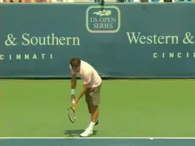
Take a look at this gorgeous motion, frame by frame at 500 frames a second.
So let's take a look at Federer's upward swing from multiple views as a way of reexamining all these issues. Hopefully we can clarify and expand our understanding of the complexities and mysteries of high performance serving. But in this first article I also want to expand our understanding of something else - this is technical biomechanical terminology that describes the serve.
We'll take a lesson from our esteemed contributing writer and the world's leading tennis biomechanist, Brian Gordon. We'll try to pare our new high speed images with clear, common sense descriptions of the movements in the upward swing. But we'll also take the next step of connecting these pictures to the technical academic terms used by biomechanists--terms like ulnar deviation, external rotation, and shoulder abduction. (Click Here for Brian's articles.)
In addition we'll try to understand the difference between the common usage of a term like "pronation" in coaching and it's much stricter biomechanical definition - and how actual pronation is or isn't really involved in the pro serve motion.
We'll start by analyzing the upward swing on first serve in this article, then take a close look at the second serve in the next. In subsequent articles in this series we'll try to go even further and address some other complex and difficult issues for the first time.
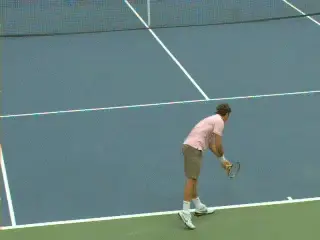
Another view to see the complexities in the pro serve.
One of the questions I have been repeatedly asked over the years is how do players vary their motions to hit with more slice, or more topspin, or to hit flatter. And a related question: how do you alter your motion to control ball location?
What are the differences in the motion when a player Federer hits a wide slice on a first serve in the deuce court, versus a flatter first serve down the middle, or a second serve hit to the backhand with more topspin?
What are the differences in the ad court between a first serve hit down the T versus a heavy kick serve hit wide? And all the other potential variations. How do players creates these variations for themselves?
All the footage in these articles will eventually show up in the new High Speed Archive. But for now we'll embed some Quick Time movies in the articles so you can see this footage frame by frame for yourself. Sound exciting? OK then, onward!
The Pro Drop
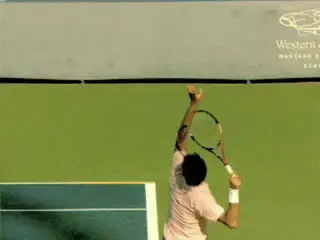
The pro drop: the critical position to maximize acceleration.
So let's start with the racket position as it starts that critical 1/10th of a second, a position I call the pro drop. I've been talking about the pro racket drop for so long that to me it seems blatantly obvious - and if you're a long time Tennisplayer subscriber, maybe you agree. But when I film club or even high level competitive players, I'm amazed how many of them have problems with this fundamental element.
Interestingly, and again this is something I've learned from Brian Gordon, what I call the pro drop doesn't coincide with, and shouldn't be confused with, the actual lowest point in the backswing. That low point occurs sooner in the motion, as the racket falls from the power position, typically with the shaft of the racket angled across the back at about a 30 degree angle.
From there the racket tip definitely moves upward to the pro drop. It also moves to the player's right - and this is key--aligning along the right side of the player's body. Although the low point is equally critical in the biomechanical motion, I believe it happens naturally if players move to the pro drop. Reaching this drop position is important because it is the starting point for that blinding 1/10th of a second acceleration to the contact.
In my opinion it would be a mistake to try to move from the low point on a direct diagonal to the contact. The racket wouldn't follow the optimum upward swing path used by all great servers. And in fact we see that this is a common problem and one that can exist even at the pro level. (Click Here to see this issue in the motion of former touring pro Paul Goldstein.)
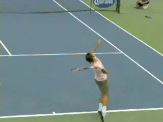
The low point in the backswing, a split second before the pro drop.
The key relationship to look for in establishing the pro drop position is a 90 degree angle between the torso and the racket face, with the edge of the racket aligned along the right edge of the torso.
As we have seen in the articles about the various elite servers referenced above, the depth of this drop can vary from player to player, probably due to shoulder flexibility, but the general alignment and position of the racket is very similar and consistent. The differences are a matter of degree.
Getting There
There are a wide variety of wind ups and backswing shapes used by top players to reach the pro drop. They range from a classic pendulum wind up used by Mark Philippoussis and John McEnroe to the extreme abbreviated motion of Andy Roddick, with players like Roger Federer and Pete Sampras falling somewhere in between.
As I have written in several articles in Your Strokes, I believe the abbreviated motions may require greater shoulder flexibility and more ability to rotate the upper arm backwards in the shoulder joint and for that reason probably make it tougher for most players to reach the pro drop (Click Here).
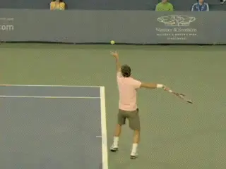
Federer uses a more classical windup to reach the drop.
Federer's drop in fact appears to be less extreme than either Roddick or Pete Sampras, and this may make the more classical windup better suited for him. Regardless of all that, the point is to get to this alignment with as deep a drop as is possible. It's up to the individual player to find the best way to get there - it's just that very few players I have seen can achieve this using an extreme abbreviation of the wind up.
In addition to the racket falling along the side of the torso, we can notice several other key points about this drop position. First, the line of the upper arm is roughly parallel with a line across the shoulders. In Federer's case we can see that the tip of his elbow is slightly raised, but just slightly.
External Rotation
And here we get to our first technical biomechanical term, "external rotation." To achieve the pro drop with the upper arm and shoulder basically aligned, the player must rotate the upper arm quite far back in the shoulder joint. This backwards rotation is what biomechanists call external rotation.
With Federer, you can see this clearly in the high speed footage. With the racket in the power position, the upper arm rotates backwards, or externally, about 90 degrees to create the pro drop. Note that the racket and entire hitting arm structure basically rotate as a unit as Federer moves to the drop.
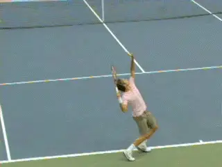
Backward or external rotation sets the stage for developing racket speed.
Players with less flexibility in the shoulder joint who have less ability to externally rotate will end up with higher elbow positions at the drop. They can also end up with the tip of the elbow pointed or angled forward with the upper arm at an angle to the plane of the shoulders. And that's ok.
You can't force your shoulder to move further than it is structurally capable. But the degree of natural external or backward rotation is a critical component in racket head speed is the motion moves upward, as we will see.
This external rotation is so significant because it is what sets the upper arm up to rotate forward in the upward swing. That countermove, or forward rotation, is considered by Brian and other biomechanists to be the most important factor to maximize in racket head speed and something we'll look at closely below.
All things being equal, more external rotation has got to be better than less, and may explain at least in part why Roddick can serve significantly faster than anyone, although it would be hard to argue that this speed alone makes his serve more effective than Federer.
More Checkpoints
The next point to look at in the pro drop is the bend in the elbow. Notice that at the drop the angle between the upper arm and the forearm is about 90 degrees or a little less. This is basically achieved at the power position and maintained as the external rotation takes the racket to the drop.
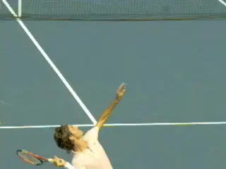
At the drop notice the downward angle of the wrist. That's radial deviation.
Next let's look at the hand and the wrist. At the drop the wrist is laid back at an angle to the forearm that is approaching 90 degrees. The technical biomechanical term for this is wrist extension. It appears to be a natural function of the relaxation in the hand and arm as the racket falls.
Radial Deviation
But understanding the wrist position at the drop also requires another biomechanical term: radial deviation. Though it is tougher to see in the video, the wrist can also be angled slightly downward from the forearm, as well as laid back. This in turn probably slightly increases the overall drop of the racket toward the court.
The technical term for this flex in the wrist is radial deviation. Hold your forearm out in front of you and flex the wrist to the left and you'll see what this movement really looks like. Now imagine that flex at the racket drop and you understand radial deviation in the service motion.
Just as external rotation sets up the upper arm to rotate in the opposite direction, radial deviation places the wrist in a position that allows for a corresponding, opposite countermove. We'll see what this is and how it works as as the motion moves upward to the contact.
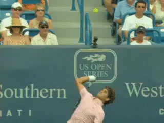
Five elements combine to triple the racket speed in 1/10th of a second.
Go Time!
So there Roger is in the drop position. With our focus on the checkpoints it is also important to remember that the motion to the drop is continuous. The racket is probably traveling around 30 mph when it reaches the drop. But from this position, it is ready to blast off and triple it's speed in the next tenth of a second.
So how does this happen? According to Brian there are 5 complex, interrelated movements that combine to produce racket speed in this critical split second. So, just to repeat myself one more time, no wonder people disagree about the serve.
Let's try to clarify some of this confusion by explaining the move to the contact in plain English. Let's also make the use of the biomechanical terms clear, and relate all this to the wonderous video.
The 5 Factors in the Upward Swing:
Shoulder Abduction
Elbow Extension
Internal Shoulder Rotation
Ulnar Deviation
Wrist Flexion
Shoulder Abduction
I used to hate terms like this - shoulder abduction--but as our analysis becomes more and more sophisticated, I think it's time that these terms move from academia into the wider world of coaching. The fact is the motion is so complex that we need their precision.
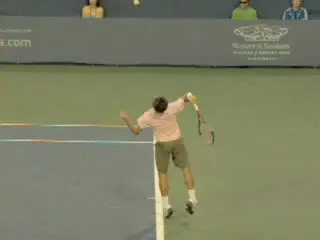
Watch the upper arm and elbow angle upward: shoulder abduction.
So what is "shoulder abduction"? Hold your arm straight out to the side. Now raise it from the shoulder. That's shoulder abduction as it relates to the serve.
You can see this clearly in Federer's motion. It actually starts the upward swing. The shoulder raises the upper arm. Watch the angle of the upper arm change in relation to the shoulder as the tip of the elbow rises. Actually this motion starts before at the low point in the swing, but continues as the racket moves through the drop and starts upward to contact.
Elbow Extension
The second component is elbow extension. All elbow extension means is that you straighten out your elbow. This motion begins immediately after the start of the shoulder abduction. One key question though is when the arm fully straightens. It might appear that this coincides with the contact. But again this is a problem in perception. It straightens just before, and we can see in the high speed video just how small the intervals that separate theses various movements.
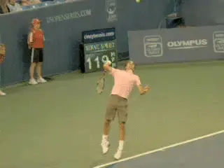
Watch the elbow reach full extension a tiny fraction of a second before contact.
You can see this by counting the actual frames. At 500 frames per second, the arm appears to straighten only about 5 frames before the contact point! For Federer, this means the elbow reaches a completely extended position something like 1/100 of a second before contact. No wonder you can't tell this with the naked eye.
Ulnar Deviation
When I wrote the original article on the "Myth of the Wrist" almost 10 years ago now (Click Here), I had no idea how much controversy and debate it was actually going to stir. Amazingly, there are still coaches debating its merits today, (or some think lack thereof...)
My main point had to do with the alleged forward breaking motion of the wrist, the so called "wave bye bye" motion. Our original high speed video showed quite clearly that this was not happening at contact, and that the position of the wrist was basically neutral at contact, that is, neither laid back or broken forward. The video also showed that any forward breaking action occurred well out into the followthrough, although at times it didn't occur at all.
Growing up as a young player, and then as a coach, that forward break was what I associated with the phrase "wrist snap," because that was how it was always described to me. I heard dozens of well known coaches use the term the same way.
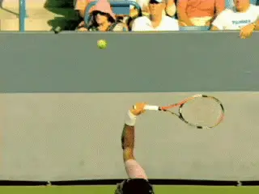
The wrist doesn't wave bye bye during or after contact.
In fact, to this day you can find one minute clinics on cable television that openly advocate the "wave bye bye" motion as the key to high level serving. Of course that isn't true, and the new high speed footage only confirms this in even more graphic detail.
So that basic point I think has stood the test of time. What I think did get lost in the argument over this article was whether there was in fact any wrist movement in the upward swing. And that was partially my fault.
The answer is yes, there is movement, which is something I have never denied. But some of the confusion might have been reduced if I had explained it more clearly or emphasized it more. Still I don't think I was seeing the whole picture so let's try to improve our understanding now.
I always believed - as the high speed video demonstrated--that the wrist came forward from the laid back position at the pro drop to the neutral position at contact. To me that wasn't "wrist snap" through the hit, as I had understood it.
But what I have learned from Brian Gordon, and missed in the original analysis, was the far more subtle side to side movement of the wrist. Brian's work has established the reality of this movement and although it is still difficult to see, the new Federer footage documents it, at least when the camera angle is just right.
This movement is the combination of the radial deviation described above, and the corresponding countermove, called ulnar deviation. To understand ulnar deviation, extend you arm the top of your hand in line with the forehand. Now simply flex your wrist to the right without breaking it forward. That's ulnar deviation.
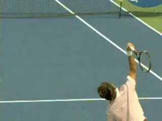
The flex of the wrist to the right - ulnar deviation - continues after contact.
We saw above that as the racket dropped, the wrist flexed the other way--radial deviation. So what happens in the upward swing is this: the wrist moves from being flexed to the left to being flexed to the right. To use the technical terms, the wrist is radially deviated at the drop, but as the arm goes upward and reaches the contact ulnar deviation takes over.
It's subtle, and the flex is only a few degrees in each direction, but it exists. Interestingly the wrist appears to be in a neutral position, right between radial and ulnar deviation at the contact. But the movement is an integral part of the overall upward swing, and Brian's research has shown that it makes a significant contribution to racket head speed when the racket is about halfway from the drop to the contact.
As for the timing of the ulnar deviation, it starts at about the same time as the elbow extension. But unlike the elbow extension which is completed before contact, the ulnar deviation continues out into the followthrough.
And if anyone out there wants to call that "wrist snap" be my guest, because, true enough, it is independent movement of the wrist. It's just not the forward break that is so commonly associated with the term.
Which brings us to an important point. Beyond improving our understanding here, the real issue to address, as with all these interrelated movements, is what causes what?
What does the player consciously initiate and/or control, and what happens as a by- product or a consequence of other parts of the motion? Once we complete the other parts of this series, we will be in better position to address these questions and see what conclusions are actually possible, and what the best advice is for players trying to develop the highest quality possible technical motion.
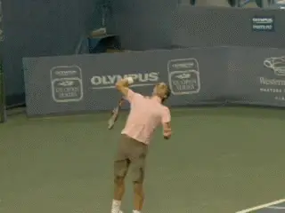
The backward, external rotation of the shoulder continues after the drop.
Which finally brings us to the last two components and their biomechanical definitions: internal rotation, and wrist flexion. Timing wise, these two movements are the last to be initiated in the upper swing. As with elbow extension and ulnar deviation, they start to happen at roughly the same time.
Internal Rotation
So what is internal rotation? It's the forward rotation of the upper arm in the shoulder joint. Previously, we looked at the opposite movement, the backward or external rotation of the upper arm and how it takes the racket to the drop.
According to Brian's work, the external rotation actual continues past the point at which the player reaches the pro drop. This means that the arm is still rotating backward even as the elbow extension and the ulnar deviation have started, and the racket itself has moved substantially upward toward the contact.
Again we are talking about tiny fractions of seconds. But a good bench mark is that this continues for about half the duration of the upward swing. This is roughly 1/20th of a second after the player reaches the drop.
So at this point, the racket is already accelerating significantly. Now the forward or internal rotation kicks in. Typically this begins at the point at which the racket tip has moved the furthest to the outside away from the torso.
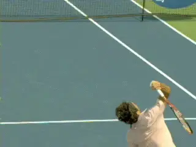
Internal rotation forward to the contact - the key to maximum speed.
With elite servers, the tip of the racket can be angled away from the torso at this point, with Andy Roddick being perhaps the most extreme example. With Federer we see a version, at least on some deliveries, with a slight tilt of the racket tip outward away from the body.
Watch the elbow turning in the animation and how the rotation of the upper arm drives the movement of the racket and hitting arm structure. You can see the complex interaction with the elbow extension and the flexing or ulnar deviation of the wrist.
As we saw above, the elbow straightens just before contact, but watch the rotation of the arm continue. In past articles, I have called this motion hand and arm rotation, because the entire hitting arm structure is rotating as a unit. According to Brian, the amount of rotation in this upper segment is what separates the good from great servers.
Wrist Flexion
Which brings us to the last and possibly most controversial element in the motion, the upward flex of the wrist prior to contact. As the upward motion starts, we have seen that there is some left to right move in the wrist, but the wrist is still predominantly laid back until the beginning of the upper arm rotation.
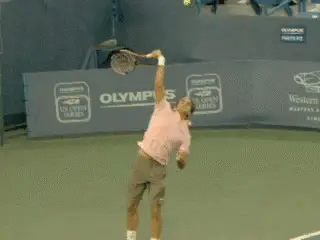
Wrist flexion to the neutral position begins at about the same time as internal rotation.
The majority of the upward forward motion of the wrist begins at about the same time as the forward internal rotation. You can see both motions happening simultaneously as the racket face approaches contact. The elbow straightens, but the rotation and forward flexion of the wrist continue, until the wrist reaches the neutral position at contact.
And again, if anyone wants to call that "wrist snap" or use that term as a coaching cue, be my guest. The main point to understand is that the major driving force in the upward swing is internal driving the hitting arm and racket.
The problem? Try modeling that wave bye bye motion and snapping forward at contact and see if you are still rotating the hand and arm. (Uh, no.)
Is there "conscious" muscle contraction flexing the wrist forward? I'll leave Brian to report on that. However what is clear is that this forward flexion basically ends at the neutral position, and there is no significant forward break of the wrist through the contact.
After Contact
What happens just after the contact is also important to understand. We have seen above that the ulnar deviation of the wrist can continue in the first part of the followthrough.
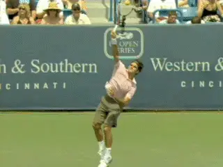
The continuation of the internal rotation after contact with the racket face 90 degrees to the court.
The most obvious movement after contact however is the continuation of the hitting arm rotation. The clearest way to see this is by looking at how the racket head turns over. The racket head rotates counter clockwise after contact, usually reaching an angle in which the face is basically perpendicular to the court. That means it has turned over something like 180 degrees from the drop.
Pronation?
So, ironically, in this article which strives to clarify technical biomechanical terms, we have yet to mention the one term that has passed over into the teaching and playing lexicon. That term is "pronation."
In coaching the term pronation is used to describe this continuing rotation of the hand arm and racket we just described. And that really isn't a problem if everyone understands the same thing in that usage.
But as I myself had to learn, that usage is different from the technical biomechanical understanding of the term. In biomechanics, "pronation" has a different, more limited meaning. Instead of referring to the entire arm rotation, it refers only to the rotation of the forearm segment.
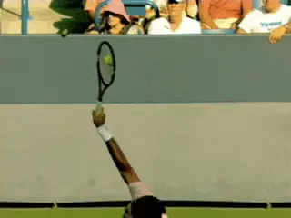
There appears to be little if any independent pronation, as the upper arm and forearm rotate together.
The forearm can actually rotate independently of the upper arm. To understand this, extend your arm and bend it 90 degrees at the elbow. Now hold the elbow steady with your other hand, and rotate the hand and forearm back and forth.
So the question is, as the internal rotation of the upper arm begins and continues to the contact and beyond, is there any independent pronation in this technical sense? According to Brian, the answer is usually no. And this seems to be consistent with what we see in the Federer high speed video. If you watch the upper arm and forearm it is impossible to detect any significant independent movement from the elbow out. The upper arm, forearm, hand and racket all seem to rotate as a single unit.
The possible exception may be at the very start of the internal rotation. When the tip of the racket flairs at an angle, that may in part be caused by - another biomechanical term - supination of the forearm.
What this means is that the forearm may rotate to the player's right slightly, or counterclockwise, to help create that angle. Or not. But if true, as the internal rotation starts to drive the motion upward, the forearm would pronate, or rotate back slightly clockwise, before internal rotation completely took over driving the arm as a unit.
Be that as it may or may not be, this is still a different technical application of the term pronation than in common usage. And both are fine, so far as I am concerned, so long as everyone understands which they are talking about when.
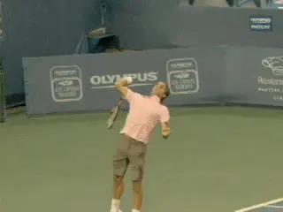
Is it only external rotation, or does supination contribute to the outward flair of the racket?
And It Means?
So there you a comprehensive attempt to describe what actually happens in the most critical part of the service motion, from the drop to the contact, and specifically, the precise physical movements of the different body parts responsible.
But that leaves one question unaddressed. Maybe the main one. The racket head is moving in three dimensional space, but in what exact direction? It is moving forward, it is moving upward, it is moving sideways. But how much in which direction when?
Well, from the drop it's definitely moving forward and upward toward the contact, also, at least at some point, from left to right. Don't forget that as this is happening the racket and arm are also rotating, 180 degrees from the drop to the contact and out into the followthrough.
The contact point itself is at the characteristic point we have identified in the other articles, just at the front edge of the body, with the racket tip is beveled slightly to the left. The ball is inside or to the player's left of the hand. But what is the actual path to get there if you were to draw it in space?
On the first serve examples in this article, we can see this general trajectory by looking at the angle of Roger's arm as it moves outward across the baseline. Note that when he reaches the maximum internal rotation, the arm appears angled at about 30 degrees to the baseline.
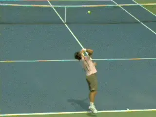
A general idea of the actual direction of the swing path, but the differences in placements?
In the two examples in the animation, he is hitting one serve down the T and the other wide. These are the extremes, but it's difficult to tell any huge difference. Possibly, you can see some slight differences in the angle of the racket face 10 frames before contact. This is 1/50th of a second before the strings hit the ball. And here may also be slight differences in these two balls in the exact amount of internal rotation, as the racket moves out to the right in the followthrough. But you have to wonder if that varies or is absolutely consistent ball to ball, even with the same general speed, spin and placement, much less when those factors vary.
Whatever the actual differences in the angle of the racket face before contact and after contact, it's ultrafine and something that occurs far too fast for the human eye to see.
And here we reach the limits of the high speed video. Furthers answer require quantitative measurements - and yeah - I'll be trying to get Brian to explain that to me, if in fact he feels it can be measured and categorized. And if he does think it possible to measure and succeeds in explaining it to me, I'll try to translate that for this series.
So that's it for part one - now go out and manipulate all 5 of those biomechanical factors to create a perfect upward swing in 1/10th of a second. Just kidding. The explanations I think are clearer than we've ever had. The implications for playing and coaching, probably less so. So I'll leave it to you guys to interpret what it all means for now. Later in this series, I'll try to give my own views on how to make a high level technical swing happen, without thinking too much intellectually about all these complexities.

John Yandell is widely acknowledged as one of the leading videographers and students of the modern game of professional tennis. His high speed filming for Advanced Tennis and Tennisplayer have provided new visual resources that have changed the way the game is studied and understood by both players and coaches. He has done personal video analysis for hundreds of high level competitive players, including Justine Henin-Hardenne, Taylor Dent and John McEnroe, among others.
In addition to his role as Editor of Tennisplayer he is the author of the critically acclaimed book Visual Tennis. The John Yandell Tennis School is located in San Francisco, California.
Source: tennisplayer.net archive — John Yandell-Roger Federer Serve -The Upward Swing.docx (John Yandell teaching library, 2002-2022). Extracted and rendered as HTML for Tennis Future Lab.